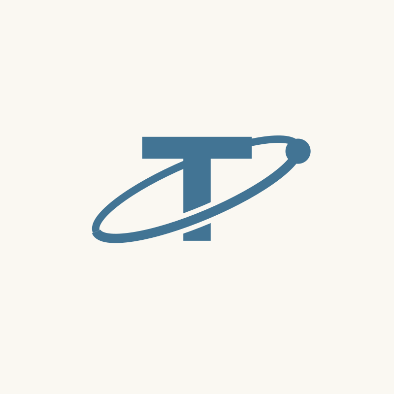
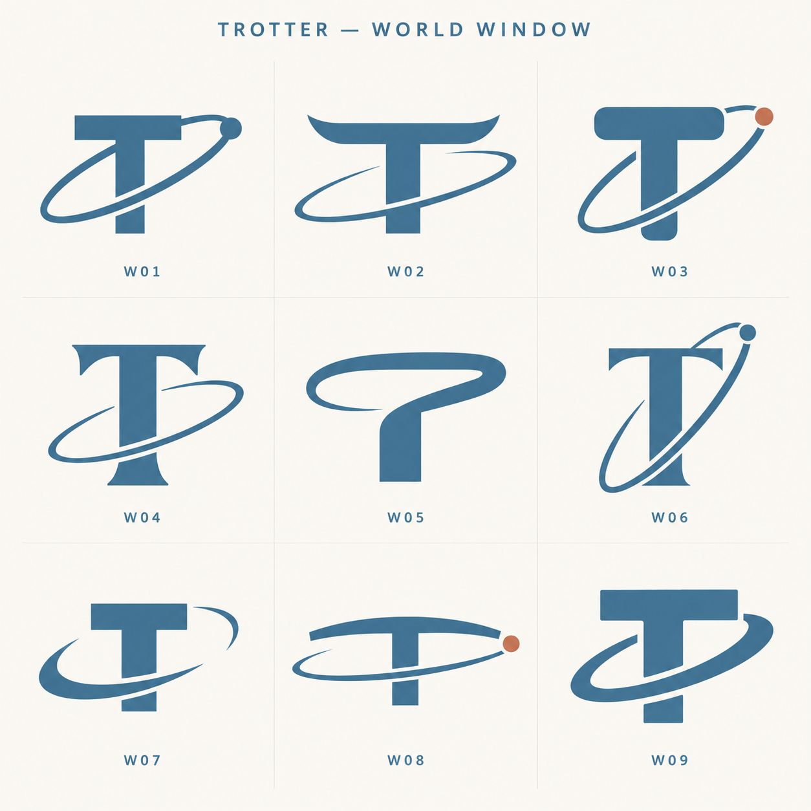
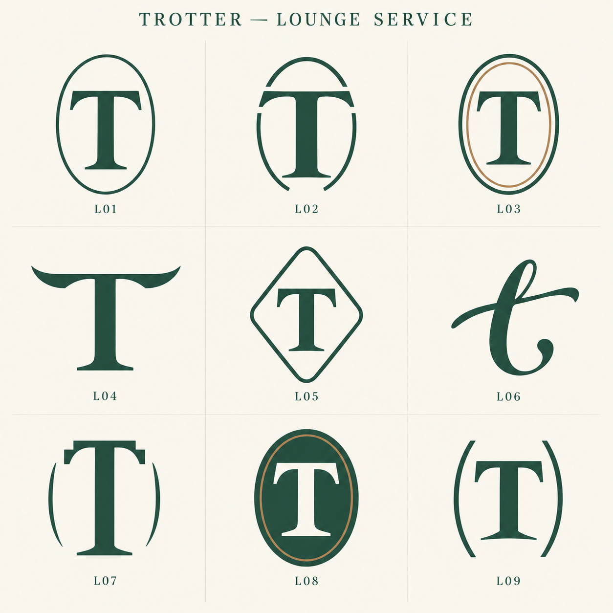
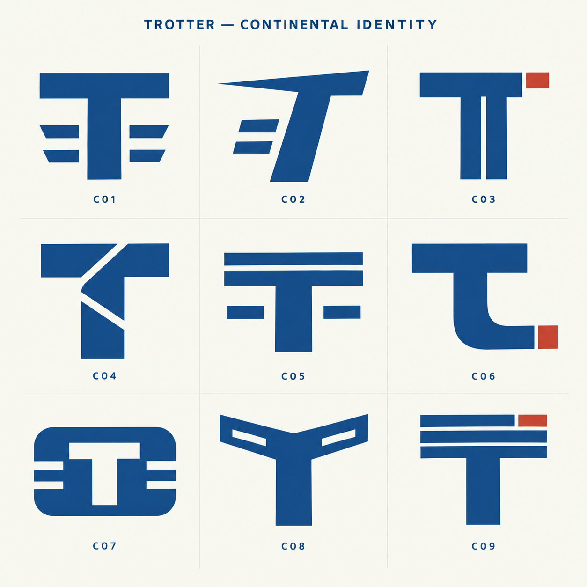

Logo studies
Three directions · 27 variations
01
World Window
W01–W09
Current
W01 · W02 · W03 · W04 · W05 · W06 · W07 · W08 · W09Full size
02
Lounge Service
L01–L09Current

L01 · L02 · L03 · L04 · L05 · L06 · L07 · L08 · L09Full size
03
Continental Identity
C01–C09Current

C01 · C02 · C03 · C04 · C05 · C06 · C07 · C08 · C09Full size